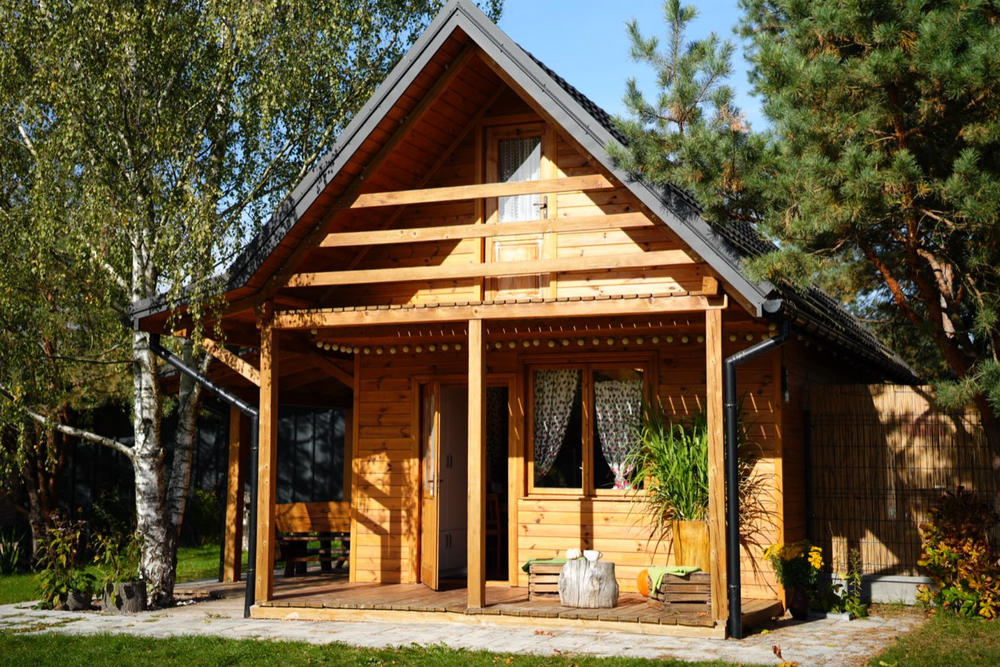

Marzysz · Noclegi
Noclegi blisko natury
Zostań w Marzyszu na dłużej – w ciszy, wśród zieleni, po spływie, saunie lub po prostu na odpoczynek od codzienności.
Nasze domki
Wybierz domek, aby zobaczyć szczegóły.
Dlaczego warto zostać na noc?
Marzysz to miejsce, w którym łatwo zwolnić tempo i nie spieszyć się do domu.
Spływy kajakowe i sauna to osobne usługi – nie są wliczone w cenę noclegu.
Po aktywnym dniu
Zakończ spływ bez pośpiechu i bez długiej drogi do domu.
Sauna i relaks
Wieczór w saunie to dobry sposób na wyciszenie.
Cisza i natura
Spokojna okolica sprzyja rozmowom, spacerom i wspólnemu czasowi.